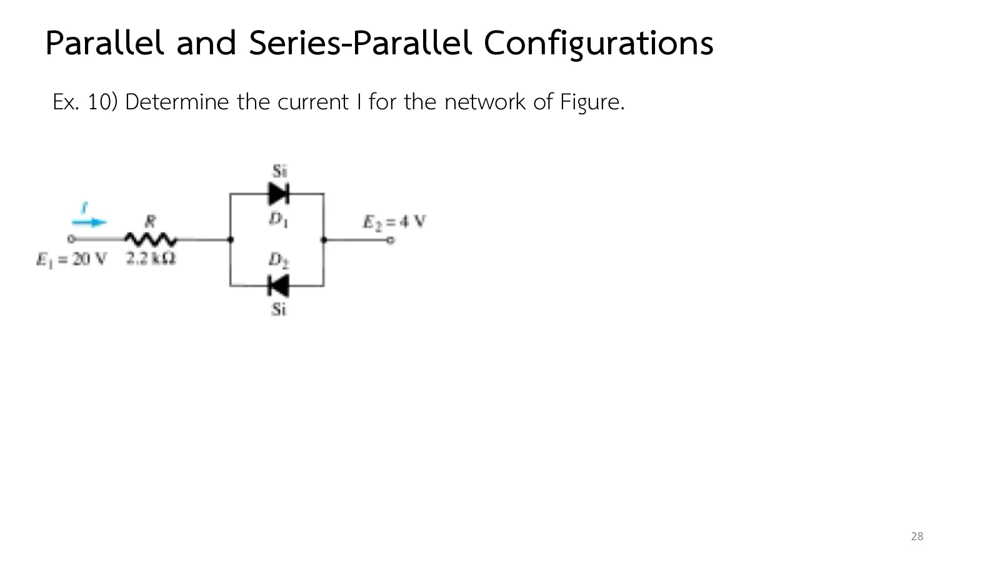
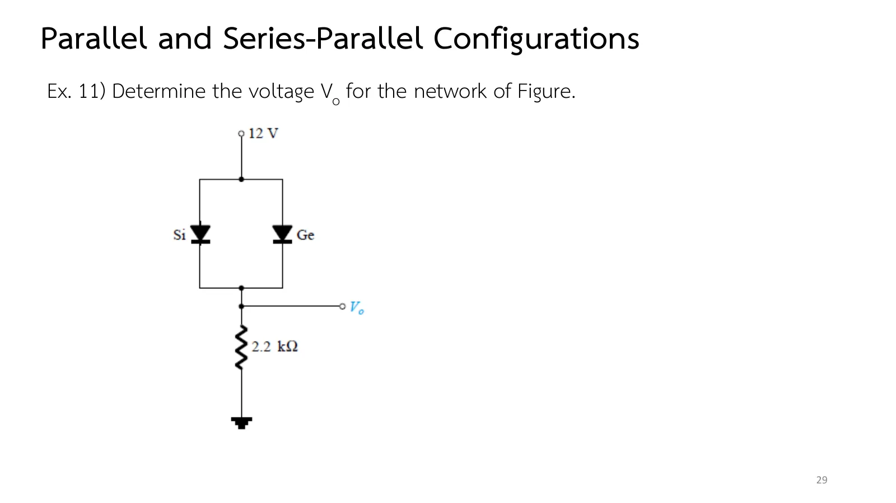
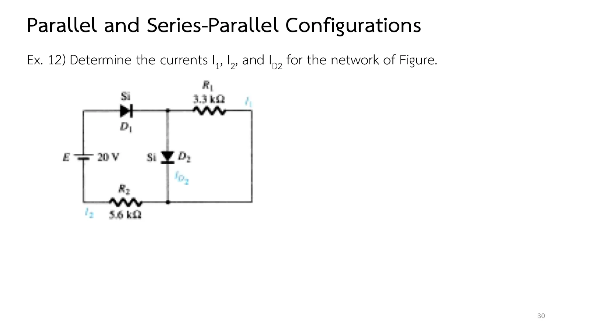

วงจรไดโอดแบบขนานและอนุกรม–ขนาน Parallel and series–parallel diode circuits
Parallel and series–parallel diode circuits One voltage across parallel diodes
ถ้าไดโอดตัวเดียวรับกระแสไม่ไหว ต่อสองตัวขนานกันจะช่วยแบ่งกระแสได้ไหม และถ้าสองตัวนั้นต่างชนิดกัน ตัวไหนจะรับไป คำตอบมาจากกฎข้อเดียว: สิ่งที่ต่อขนานกันมีแรงดันเท่ากันเสมอ ไดโอดที่ขนานกันจึงต้องตกลงกันที่แรงดันเดียว หน้านี้ขยายขั้นตอนของวงจรอนุกรมไปยังวงจรขนานและอนุกรม–ขนาน (series–parallel) มีภาพจำลองไดโอดสองตัวขนานกันที่เทียบแบบจำลองโดยประมาณกับเส้นโค้งจริงของรูป 1.18 (ส่วน A) โจทย์ Ex.9–Ex.12 และแบบฝึกเพิ่ม (สไลด์บทที่ 2 ชุดที่ 1 หน้า 26–30 · Boylestad หัวข้อ 2.5)
If one diode cannot carry the current, will two in parallel share it? And if the two are of different kinds, which one takes it? The answers come from a single rule: elements in parallel always share one voltage, so parallel diodes have to agree on a single voltage. This page extends the series procedure to parallel and series–parallel networks, with two parallel diodes comparing the approximate models against the actual curves of Fig. 1.18 (section A), Ex.9–Ex.12, and more practice (chapter 2 slides, Part I, pp. 26–30 · Boylestad section 2.5).
ประเด็นสำคัญของหน้านี้
- สิ่งที่ขนานกันมีแรงดันเท่ากัน: ไดโอดเหมือนกันสองตัวที่ขนานกันนำพร้อมกันที่ \(V_K\) และแบ่งกระแสเท่ากัน ช่วยให้แต่ละตัวรับกระแสเพียงครึ่งเดียว (Ex.9)
- ไดโอดต่างชนิดขนานกัน: ตัวที่ต้องการแรงดันต่ำกว่านำก่อนและตรึงแรงดันคร่อมคู่ไว้ อีกตัวจึงไม่ถึงแรงดันที่ต้องการและไม่นำ (Ex.11)
- ไดโอดขนานที่หันสวนกัน: ตัวที่หันตามทิศกระแสนำ อีกตัวถูกไบแอสกลับด้วยแรงดันของตัวที่นำ (Ex.10)
- วงจรอนุกรม–ขนาน: หาสถานะของไดโอดก่อน แล้วใช้กฎแรงดันของเคียร์ชอฟฟ์กับแต่ละวง และกฎกระแสของเคียร์ชอฟฟ์ที่จุดต่อ (Ex.12)
Key points of this page
- Parallel elements share one voltage: two identical diodes in parallel conduct together at \(V_K\) and split the current equally, so each carries only half (Ex.9).
- Unlike diodes in parallel: the one needing less voltage turns on first and holds the pair there, so the other never reaches its own \(V_K\) and stays off (Ex.11).
- Parallel diodes facing opposite ways: the one pointing with the current conducts; the other is reverse-biased by the voltage of the first (Ex.10).
- Series–parallel networks: find the states of the diodes first, then apply Kirchhoff's voltage law round each loop and his current law at the nodes (Ex.12).
ไดโอดสองตัวขนานกัน: แบบจำลองเทียบกับเส้นโค้งจริง
Two diodes in parallel: the models against the actual curves
แหล่งจ่าย E จ่ายผ่าน R = 0.33 kΩ ให้ไดโอดสองตัวที่ขนานกันแบบเดียวกับ Ex.9 เลือกคู่ของไดโอดและแบบจำลอง แล้วเลื่อน E แผงข้างภาพแสดงกระแสผ่าน R และในไดโอดแต่ละตัว ด้วยแบบจำลองโดยประมาณ เจอร์เมเนียมที่ขนานกับซิลิคอนรับกระแสทั้งหมด ส่วนเส้นโค้งจริงของรูป 1.18 (ไดโอดในท้องตลาด) แสดงว่าซิลิคอนมีกระแสเล็กน้อยจริง แต่น้อยจนตัดทิ้งได้
A source E feeds two parallel diodes through R = 0.33 kΩ, as in Ex.9. Choose the pair and the model, then move E; the side panel shows the current through R and in each diode. With the approximate models, germanium in parallel with silicon takes all the current; the actual curves of Fig. 1.18 (commercial diodes) show silicon carrying a little, small enough to ignore.
Ex.9: ไดโอดซิลิคอนสองตัวขนานกัน
Ex.9: two silicon diodes in parallel
สไลด์หน้า 26 บอกว่าวงจรขนานใช้ขั้นตอนเดียวกับวงจรอนุกรมได้ทุกขั้น แล้วให้ Ex.9: ไดโอดซิลิคอนสองตัวเหมือนกันขนานกันหลังตัวต้านทาน 0.33 kΩ ก่อนเปิดเฉลย ลองเดาว่ากระแสจะแบ่งกันอย่างไร และแต่ละตัวรับเท่าใดเมื่อเทียบกับไดโอดตัวเดียว
Slide p. 26 says that parallel networks follow the same steps as series ones, then gives Ex.9: two identical silicon diodes in parallel after a 0.33 kΩ resistor. Before opening the solution, guess how the current splits and what each diode carries compared with a single diode.
![Slide 26, Parallel and Series-Parallel Configurations: the methods applied in the previous section can be extended to the analysis of parallel and series-parallel configurations; for each area of application, simply match the sequential series of steps applied to series diode configurations. Ex. 9: determine V_o, I_1, I_D1, and I_D2 for the parallel diode configuration of the figure: E = 10 V, R = 0.33 kΩ with I_1, two silicon diodes D_1 and D_2 down to ground with I_D1 and I_D2, and V_o across them. Slide 27 repeats the problem.](slides/ch2a/p26.webp)
E = 10 V จ่ายผ่าน R = 0.33 kΩ ให้ไดโอดซิลิคอน D1 และ D2 ที่ขนานกันลงกราวด์ จงหา \(V_o\), \(I_1\), \(I_{D_1}\) และ \(I_{D_2}\)
E = 10 V feeds two parallel silicon diodes, D1 and D2, to ground through R = 0.33 kΩ. Determine \(V_o\), \(I_1\), \(I_{D_1}\) and \(I_{D_2}\).
ขั้นที่ 2 แทนไดโอดทั้งสองด้วยแบตเตอรี 0.7 V ที่ขนานกัน แผงข้างภาพแสดงการแบ่งกระแส ลองตอบก่อน
Step 2 puts two parallel 0.7 V batteries in place of the diodes; the side panel shows how the current splits. Try it first.
Ex.10: ไดโอดขนานที่หันสวนกัน
Ex.10: parallel diodes facing opposite ways
Ex.10 (สไลด์หน้า 28) วางไดโอดขนานกันแต่หันสวนกัน ระหว่างจุด 20 V กับจุด 4 V ไดโอดตัวหนึ่งต้องนำ อีกตัวต้องไม่นำ ก่อนเปิดเฉลย ลองหาว่าเป็นตัวไหน และตัวที่ไม่นำรับแรงดันย้อนกลับเท่าใด
Ex.10 (slide p. 28) puts the two parallel diodes facing opposite ways between a 20 V point and a 4 V point. One must conduct and the other must not: before opening the solution, work out which, and what reverse voltage the off diode sees.

จุด \(E_1\) = 20 V ต่อผ่าน R = 2.2 kΩ ไปยังไดโอดซิลิคอนสองตัวที่ขนานกันแต่หันสวนกัน แล้วไปยังจุด \(E_2\) = 4 V (ทั้งสองเทียบกราวด์) จงหากระแส \(I\)
The point \(E_1\) = 20 V feeds, through R = 2.2 kΩ, two silicon diodes in parallel facing opposite ways, which lead to the point \(E_2\) = 4 V (both to ground). Determine the current \(I\).
ภาพจำลองวาดแหล่งจ่ายทั้งสองที่ต่อกราวด์ให้ครบวง ลองตอบก่อน
The simulation draws both supplies to ground to close the loop. Try it first.
Ex.11: ซิลิคอนขนานกับเจอร์เมเนียม
Ex.11: silicon in parallel with germanium
Ex.11 (สไลด์หน้า 29) ขนานไดโอดซิลิคอนกับเจอร์เมเนียมที่หันลงทั้งคู่ ทั้งสองอยากนำ แต่แรงดันคร่อมคู่มีได้ค่าเดียว ลองคิดว่าตัวไหนถึงแรงดันที่ต้องการก่อน แล้วอีกตัวจะเหลืออะไร ภาพจำลองในส่วน A มีคู่นี้ให้เทียบกับเส้นโค้งจริงด้วย
Ex.11 (slide p. 29) puts a silicon and a germanium diode in parallel, both pointing down. Both would like to conduct, but the pair can have only one voltage: work out which one reaches its turn-on voltage first and what is left for the other. The simulation of section A has this pair too, against the actual curves.

แหล่งจ่าย 12 V จ่ายให้ไดโอดซิลิคอนและเจอร์เมเนียมที่ขนานกันและหันลงทั้งคู่ ปลายล่างต่อกันเป็นจุดขาออก \(V_o\) ซึ่งมีตัวต้านทาน 2.2 kΩ ลงกราวด์ จงหา \(V_o\)
A 12 V supply feeds a silicon and a germanium diode in parallel, both pointing down; their lower ends form the output node \(V_o\), with a 2.2 kΩ resistor to ground. Determine \(V_o\).
ขั้นที่ 2 แทนเจอร์เมเนียมด้วยแบตเตอรี 0.3 V และซิลิคอนด้วยช่องเปิด ลองตอบก่อน
Step 2 puts a 0.3 V battery in place of the germanium diode and a gap in place of the silicon one. Try it first.
Ex.12: วงจรอนุกรม–ขนาน
Ex.12: a series–parallel network
Ex.12 (สไลด์หน้า 30) รวมทุกอย่างเข้าด้วยกัน: D1 อนุกรมกับแหล่งจ่าย ส่วน D2 ขนานกับ \(R_1\) แล้วรวมกันผ่าน \(R_2\) หาสถานะของไดโอดทั้งสองก่อน แล้วใช้กฎแรงดันของเคียร์ชอฟฟ์กับแต่ละวง และกฎกระแสของเคียร์ชอฟฟ์ที่จุดต่อ
Ex.12 (slide p. 30) brings it all together: D1 in series with the supply, D2 in parallel with \(R_1\), both returning through \(R_2\). Find the state of both diodes first, then apply Kirchhoff's voltage law round each loop and Kirchhoff's current law at the junction.

E = 20 V ต่อผ่านไดโอดซิลิคอน D1 ไปยังจุดที่แยกเป็น \(R_1\) = 3.3 kΩ และไดโอดซิลิคอน D2 ที่ขนานกัน แล้วรวมกันผ่าน \(R_2\) = 5.6 kΩ กลับไปยังแหล่งจ่าย จงหา \(I_1\), \(I_2\) และ \(I_{D_2}\)
E = 20 V feeds, through a silicon diode D1, a node that splits into \(R_1\) = 3.3 kΩ and a silicon diode D2 in parallel; they rejoin and return through \(R_2\) = 5.6 kΩ to the source. Determine \(I_1\), \(I_2\) and \(I_{D_2}\).
ขั้นที่ 2 เป็นต้นไปไดโอดทั้งสองเป็นแบตเตอรี 0.7 V แผงข้างภาพแสดงกระแสตามกฎกระแสของเคียร์ชอฟฟ์ ลองตอบก่อน
From step 2 both diodes are 0.7 V batteries; the side panel shows the currents of Kirchhoff's current law. Try it first.
ฝึกเพิ่ม
More practice
ลองทำดู 1 — ใครนำก่อน
- ส่วน A เลือก Si ขนาน Ge กับแบบจำลองโดยประมาณ: กระแสทั้งหมดผ่าน Ge ซิลิคอนเป็นศูนย์พอดี เพราะแรงดันคร่อมคู่ถูกตรึงไว้ที่ 0.3 V
- เปลี่ยนเป็นเส้นโค้งจริง (รูป 1.18): ซิลิคอนมีกระแสราวหลายสิบไมโครแอมแปร์ ไม่ถึง 0.4 % ของกระแสทั้งหมด และแรงดันคร่อมคู่สูงกว่า 0.3 V เล็กน้อยตามกระแส
- เลือก Si ขนาน Si: ไม่ว่าแบบจำลองใด กระแสแบ่งเท่ากันพอดี เพราะไดโอดสองตัวเหมือนกันทุกประการ (ในวงจรจริงไดโอดสองตัวไม่เหมือนกันเป๊ะ จึงแบ่งไม่เท่ากันเสมอไป)
ลองทำดู 2 — กฎทั้งสองของเคียร์ชอฟฟ์
- ข้อ 4: ชี้เมาส์ที่ D2 และ R1 ในภาพจำลอง แรงดันเท่ากัน 0.7 V เพราะขนานกัน
- ข้อ 4: ผลรวมกระแสที่เข้าจุดต่อด้านล่าง (\(I_1 + I_{D_2}\)) เท่ากับกระแสที่ออก (\(I_2\)) พอดี
Try this 1 — who turns on first
- In section A choose Si with Ge and the approximate models: all the current goes through germanium and silicon carries exactly none, because the pair is held at 0.3 V.
- Switch to the actual curves (Fig. 1.18): silicon carries some tens of microamperes, under 0.4 % of the total, and the pair sits a little above 0.3 V, rising with the current.
- Choose Si with Si: with either model the current splits exactly in half, because the two diodes are identical (two real diodes never are, so in practice the split is not always even).
Try this 2 — both of Kirchhoff's laws
- Problem 4: hover over D2 and R1 in the simulation: both have 0.7 V, being in parallel.
- Problem 4: the currents into the lower node (\(I_1 + I_{D_2}\)) add up exactly to the current out (\(I_2\)).